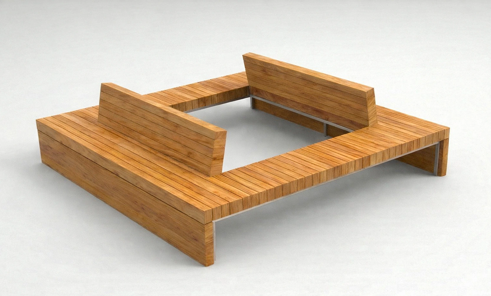
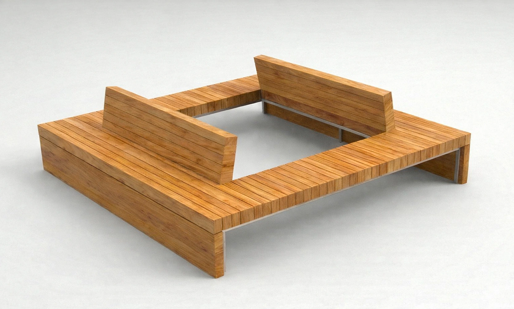

Description du projet Ashtable...


Ce poulailler revisite l’architecture traditionnelle du poulailler en intégrant des matériaux et une volumétrie contemporaine . Son enveloppe en panneaux de contreplaqué et en verre repose sur une structure en bois. L’aménagement intérieur est pensé selon une logique fonctionnelle optimisant les déplacements des animaux : pondoirs accessibles par l’extérieur, perchoirs suspendus sur structure indépendante, système de ventilation passive et trappe de nettoyage intégrée. L’insertion de panneaux de verre assure un apport lumineux naturel, limitant ainsi le recours à l’éclairage artificiel. L’ensemble s’inscrit dans une démarche de microarchitecture domestique, où le pragmatisme du poulailler rencontre une esthétique épurée, intégrable dans un jardin contemporain.


Ce module de mobilier extérieur hybride revisite les standards de l’aménagement scolaire en proposant une solution adaptable et mobile. Monté sur roues avec système de blocage, il s’articule autour d’une structure en bois et de panneaux contreplaqués. Il intègre une série de fonctions : assises, table d’appoint, pare-soleil, paroi végétale et bacs de plantation. Son design favorise une appropriation intuitive par les enfants, encourageant à la fois l’apprentissage en extérieur et l’expérimentation spatiale. Conçu pour fonctionner aussi en cluster, il permet de générer des configurations d’îlots favorisant la cohabitation et l’échange entre élèves.


Cette table basse modulaire explore la relation entre la structure et l’interaction des volumes. La pièce principale, une table en bois massif, est percée en son centre pour accueillir un maillage en corde tressée, créant une surface souple de réception. Une seconde table d’appoint, plus petite, est conçue pour venir s’insérer dans les mailles du filet. Cet objet propose une lecture évolutive du mobilier, où chaque élément peut exister indépendamment ou en interaction avec l’autre.
 



Banc autour d’un arbre – Concours Lauréat du concours Forêt Genève, ce projet met en exergue une valorisation locale du matériau en intégrant du chêne massif issu des forêts genevoises. Son ossature en acier galvanisé offre une stabilité structurelle tout en contrastant avec la chaleur du bois. Il permet de s’asseoir en périphérie ou de s’allonger, maximisant ainsi les interactions et les postures possibles.


Ce projet de mobilier urbain propose une approche modulaire de l’aménagement de l’espace public. Composé de dalles de béton renforcé et d’une structure en tubulure d’acier thermolaqué, son système modulaire offre des configurations infinies, permettant une adaptation aux flux et aux usages variés de la place. L’assemblage des éléments joue sur l’alternance entre pleins et vides, créant des surfaces de repos, de rencontre ou d’appropriation ludique.